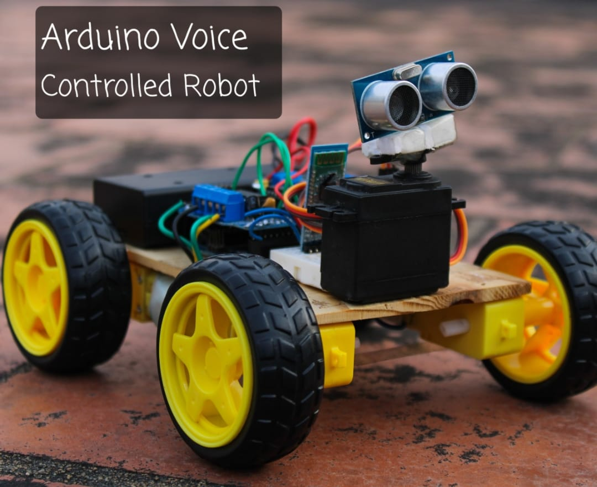
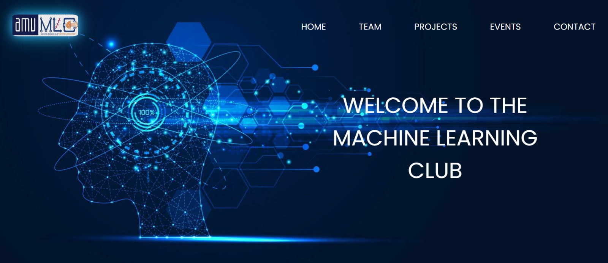

AMU Machine Learning Club
Projects at MLC
From intelligent health systems to robotics and AI assistants, explore the innovations being built by members of the Machine Learning Club.
Ongoing Projects
Research, engineering and experimentation by MLC members
DiaPlate: A Multimodal, Metabolically-Aware Meal Screening System
DiaPlate is an intelligent health-tech system designed to emulate a clinical dietitian using multimodal sensing. Unlike conventional calorie-tracking apps, DiaPlate integrates three sensing layers:
- Vision: Computer vision identifies food items and estimates portion size.
- Audio: Captures contextual information such as “extra ghee” or “sugar-free”.
- Metabolic Awareness: Considers user physiological state such as fasting or activity level.
The system provides personalized dietary recommendations by combining food recognition, contextual input and metabolic modelling.
University Intelligent Chatbot using Website Data
This project develops an AI-powered chatbot capable of retrieving and understanding information from official university websites.
- NLP-based query understanding
- Automated website data extraction
- Context-aware answer generation
- Instant support for admissions, courses and notices
The system improves accessibility and reduces manual query handling by providing reliable, real-time information to students and stakeholders.

Voice Controlled Robot
The Voice Controlled Robot is an embedded AI and robotics project enabling a robot car to respond to spoken commands.
- Listen to voice commands
- Process and interpret speech
- Execute movement accordingly
The system integrates speech recognition, microcontroller programming and motor control systems demonstrating practical AI robotics applications.

Machine Learning Club (MLC) Website
The MLC Website is a centralized digital platform designed to showcase and document the activities of the Machine Learning Club.
- Ongoing and completed projects
- Research contributions
- Workshops and events
- Technical blogs and resources
- Team members and achievements
The platform establishes a strong digital presence for the club and maintains structured documentation of its initiatives.
Eager to Join?
Become part of the Machine Learning Club and build real-world AI systems with us.
Join the Club